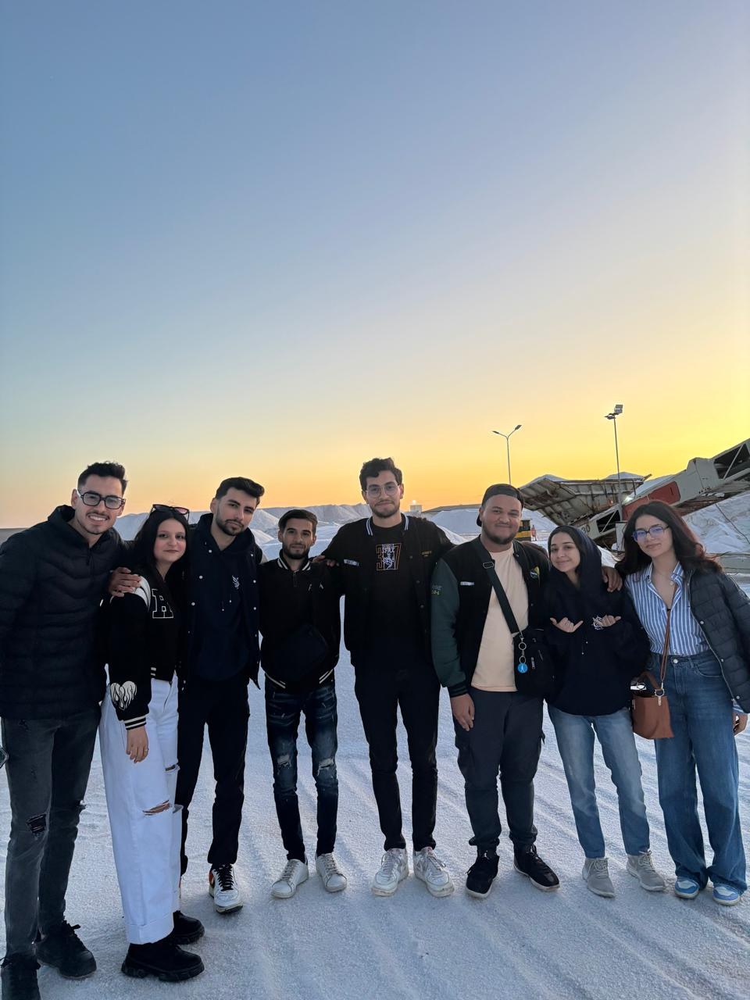
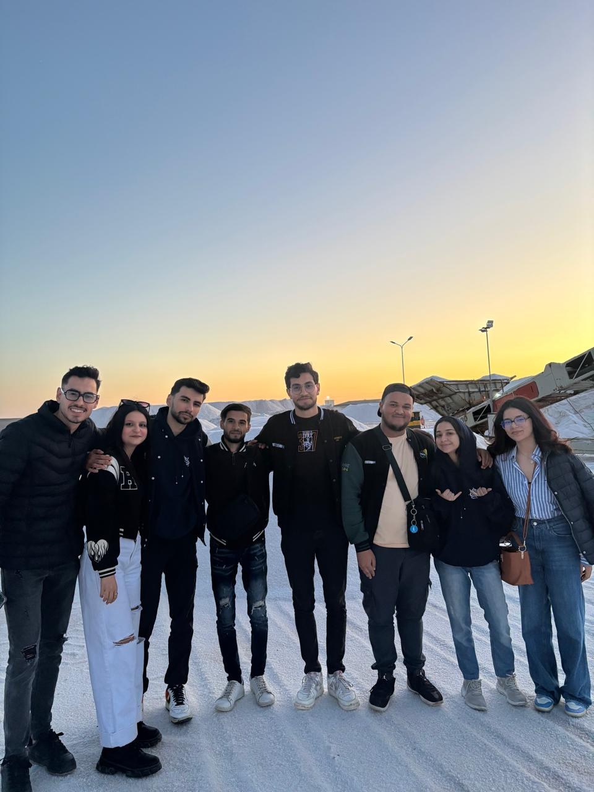

Who Am I
I am an aspiring NGO and education professional with a strong foundation in language, business communication, and leadership. With years of volunteer work and leadership in AIESEC, including managing international projects and empowering youth through exchange programs, I am driven to continue serving global communities through structured nonprofit initiatives and transformative education.
Statement of Objectives
This statement outlines my deep motivation for joining the Master’s program in NGO Management. Drawing from my academic background in English Studies and my extensive experience in youth-led organizations such as AIESEC, I highlight my commitment to the non-profit sector, my leadership journey, and how this program aligns with my long-term mission of creating meaningful impact in civil society.
Curriculum Vitae
My CV offers a concise overview of my academic journey, leadership roles, and community engagement. It includes my volunteering experiences with international NGOs, team leadership within AIESEC, and my dedication to youth empowerment and cross-cultural collaboration. This document reflects both my academic achievements and my commitment to real-world social change.
Academic Transcript
These are my official transcripts from the Faculty of Letters and Humanities of Sfax, showcasing my academic progress across the three years of my undergraduate studies.
National ID
A scanned copy of my National ID is included to verify my identity and nationality, as required by the application process.
Volunteer Gallery

 
